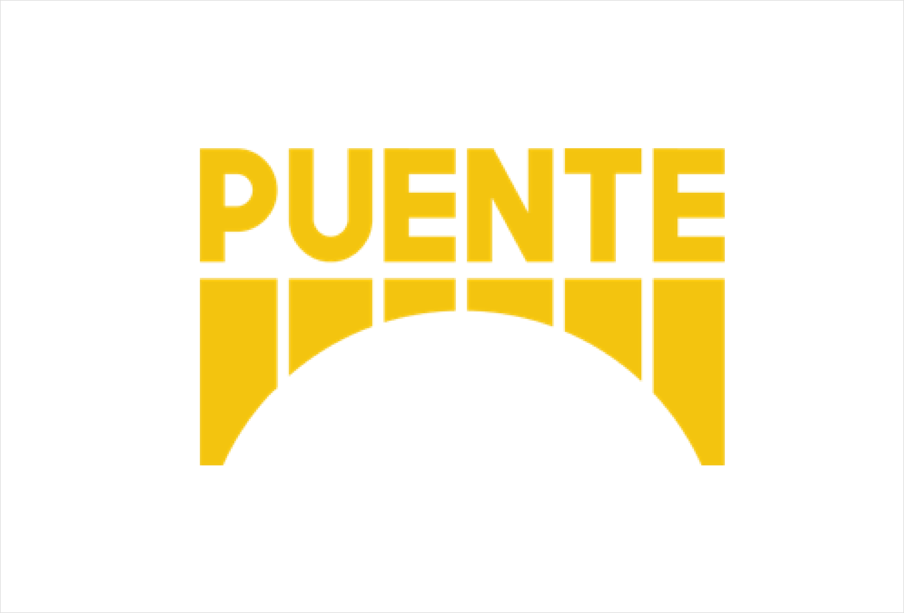
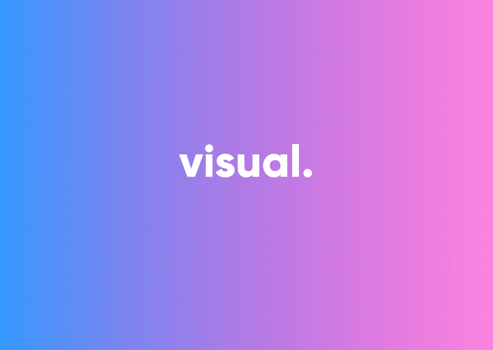

Hi, my name is Liz!
I am a current UofM School of Information student studying UX Design. I create compelling interactive systems that prioritize user's needs and bridge the space between technical and creative processes. Below are some projects I have worked on. Click on 'projects' to learn more.



